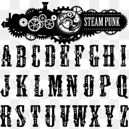

Кроссбраузерность
Сайт должен одинаково хорошо смотреться во всех популярных браузерах. Opera, Yandex, Google Chrome, Microsoft Edge, Safari, Firefox, Netscape.

Соответствие дизайна
Если сайт вёрстается по определённому макету дизайнера, то он должен быть выполнен со 100%-м сходством и соблюдением шрифтов, цвета, отступов и т. д..

Шрифты
Не больше трёх шрифтов на сайт. Один для заголовков, второй — для всех остальных текстов, третий — для выделения важных слов. Должно хватить.
Цвета
Обычно на сайте два цвета: ведущий и акцентный. Подобрать удачную цветовую пару можно за счёт насмотренности или специальных инструментов.